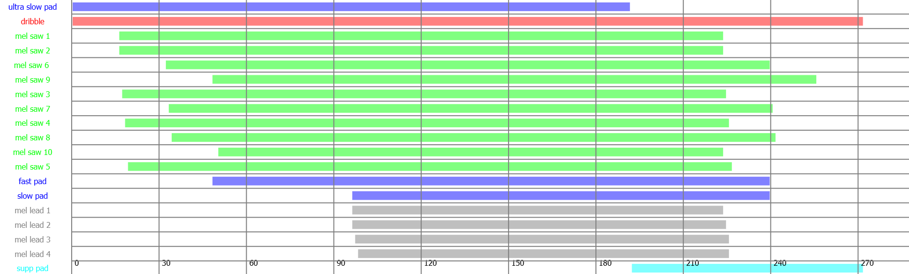

Problem Setup
The goal of this project was to develop a set of algorithms that could generate a random sequence of musical events that sounded like a musical composition. There are many different versions of algorithmic composition using a wide variety of tools and methodologies ranging from generative machine learning models to simple Max/MSP patches. For this project I decided to use SuperCollider, an open source platform for audio synthesis and algorithmic composition.
Experimental Procedure
Before starting the project, I had to learn how to use SuperCollider. SuperCollider is divided into three different components: scsynth (a real time audio server that receives OSC messages), sclang (an interpreted programming language), and scide (the sclang IDE). All three components were used in this project, according to the following workflow: scsynth processed the synthesizer and musical pattern messages that were created using sclang in scide.
Since I had never been exposed to algorithmic composition before, I learned about some of the different techniques and tools available in SuperCollider by watching videos by Manifest Heap and Eli Fieldsteel. It was through these videos that I learned how to make my own synths in SuperCollider and how to use one of the key aspects of algorithmic composition: patterns and randomness.
I had wanted to make an algorithmic music generator for the Tech House genre; however, I quickly realized that this was a challenging endeavour as Tech House requires a very specific structure, which doesn't lend itself very well to the random nature of algorithmic composition in SuperCollider. In the end, I settled for a more ambient, cinematic and percussion-free style of music as in my opinion, true randomness is not compatible with the structured beat and rhythm one associates with typical percussion.
Originally I was using MIDI messages and the GM-01 soundset in my compositions; however, sound selection is a very important part of a person's perception of music and the GM-01 soundset had only basic sounds that could not be manipulated easily. I spent a lot of time researching how to use a different soundset. I experimented with routing the MIDI channel messages to separate tracks and instruments in FL Studio (a DAW); however, this didn't work as I was unable to sync FL Studio's internal clock with SuperCollider's tempo clock so the messages were not in tempo. I also tried routing the MIDI messages to an external synthesizer; however, my external synth (the Roland GAIA SH-01) could only receive messages on one channel at a time, making it impossible to use the synth's multiple different banks concurrently. I was close to resigning myself to using the GM-01 soundset when I discovered I could use SuperCollider synthesizers as the instrument in musical event messages sent to the OSC server.
I used SuperCollider's pattern classes to represent musical event messages. Patterns in SuperCollider are very powerful and can be used to send MIDI messages from a MIDI device or send musical messages to an OSC server. SuperCollider patterns can be thought of as an abstraction of a computational task and they are often used to produce streams of information such as musical events. In my project, each component of a composition (e.g. a pad or a lead) was represented as a combination of several different patterns. This setup allows you to randomly modify aspects of a musical event message like pitch, amplitude, and duration each time an event for that component is generated. If using a SuperCollider synth, parameters of that synth such as the detune value, asdr envelope, or bandpass filter frequency range can also be randomly modified each time an event is generated. In addition to randomizing aspects of a musical event, I also randomized the key and the tempo of the composition each time a new composition was generated.
The main patterns I used in this project were Pbind and Prand but I also used Pseq, Pwrand, Pfunc, and Pwhite. Pbind was the most important pattern in this project as it combines several value streams (e.g. pitch, amplitude, synth parameters) into one event stream. I used it to represent the musical event messages for a specified instrument (synth). Prand randomly selects an item from a list for a specified number of repetitions. Its main use in my project was to randomly select pitches (or a set of pitches) to be played. Read about the rest of patterns here
Results
The goal of this project was to make an ambient, cinematic style music generator so I had to find synths that would fit into this style. I used three different synths in my project, two of which were a simple pad and lead made by professors and students at Santa Clara University. They were accessible as a SuperCollider Quark. The other one was a very powerful bandpass filtered sawtooth wave designed by Eli Fieldsteel. This synth could be modified extensively to make a range of sounds and I used it as a pad, a lead, and a rhythmic droplet.
In order to have some control over the randomness of the musical events, pitches of notes and chords, duration, amplitude and other parameters were only selected out of a range or pool of specified values. In addition, detune values of the synth, panning, filter frequencies and other parameters were randomized, meaning each new composition would be unlike the previous ones. When composing the piece, I used Manifest Heap's sc-timeline Quark to schedule events. This way I could give the composed piece some structure. Despite only using three synths, through layering I was able to give the piece some depth and movement. The image below shows the different scheduled events and the beat range where they appeared in the piece.
Sample Composition
Limitations and Future Work
One of the hardest parts of this project was balancing my desire for the composition to sound good yet also be as random as possible. I believe I struck a balance between the two by determining which instruments would play when but letting the aspects of the musical events be chosen randomly. If I had more time to learn about synthesis and making synthesizers in SuperCollider I believe the output of my program would be a lot more interesting.
If I were to tackle the problem of algorithmic composition again I think I would look into the machine learning approach. I have experience using machine learning in NLP and data science; however, I thought that it would be too complicated given the time constraints of this project and lack of publicly available datasets for training ML models on sound generation.